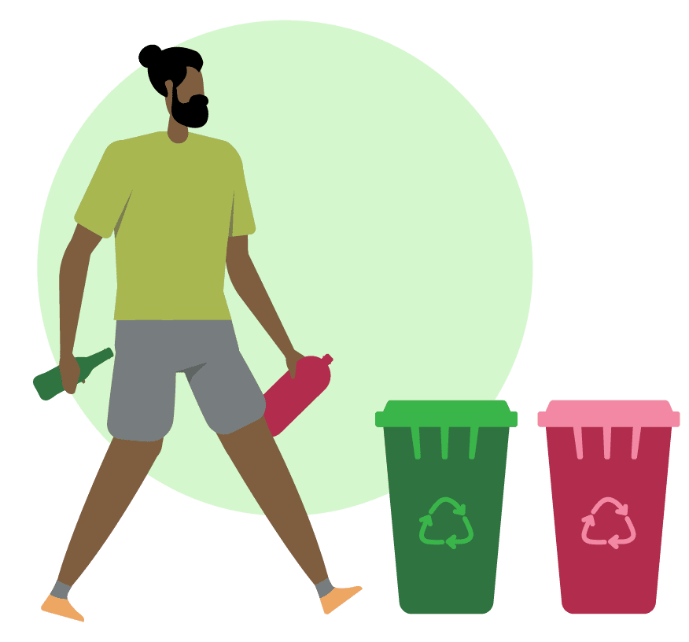
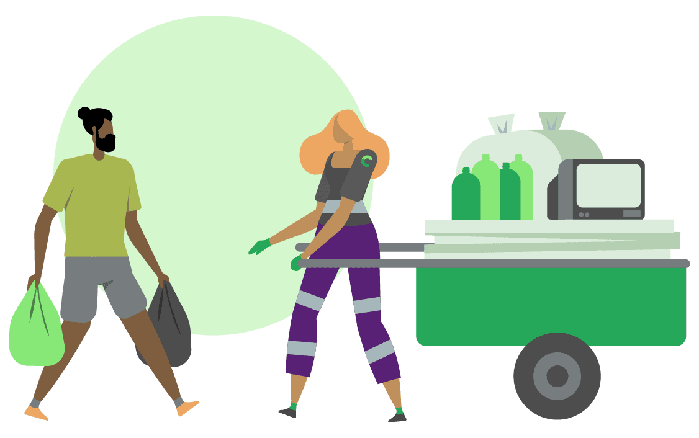

Recycle sua nova Ferramenta de Reciclagem
Como Funciona
1.Separação: Antes de solicitar uma coleta, os resíduos recicláveis precisam ser higienizados, separados e embalados da maneira correta para facilitar o trabalho do catador.
2.Agendamento: Depois de separar os materiais, é a hora de entrar no Recycle e procurar pelo catador mais perto da sua localização! Combine direto com o profissional o melhor dia e horário para que a coleta aconteça.
3.Coleta: Ao encontrar com o catador, não se esqueça de remunerá-lo pelo serviço prestado. Trabalhar com reciclagem é um desafio diário que merece reconhecimento.
4.Impacto: Finalizar uma coleta pelo Recycle é contribuir para o meio ambiente e, de quebra, aumentar a renda dos catadores. Valorize e remunere o trabalho de quem faz a reciclagem acontecer!
